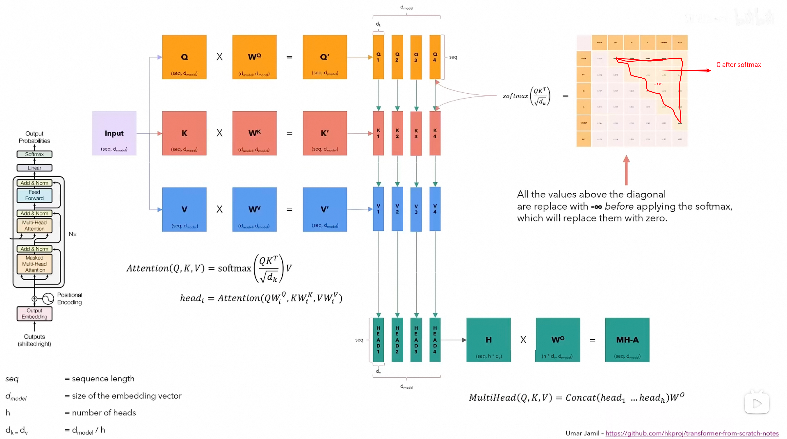
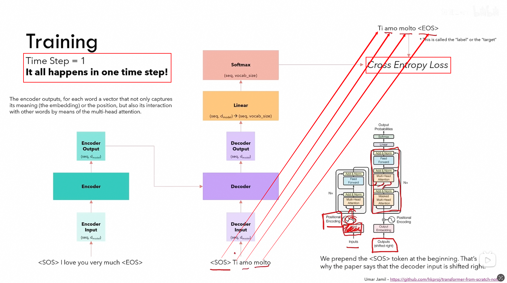
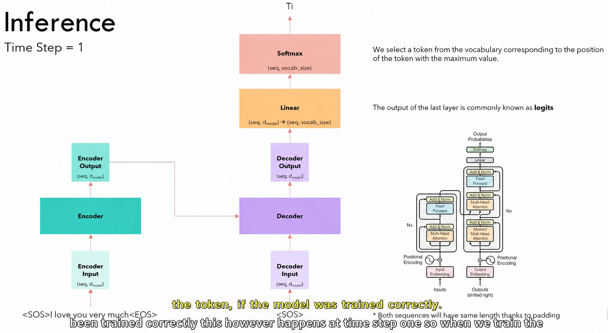
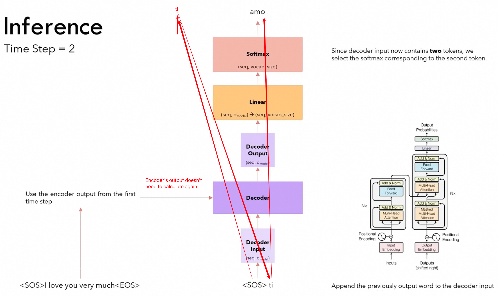
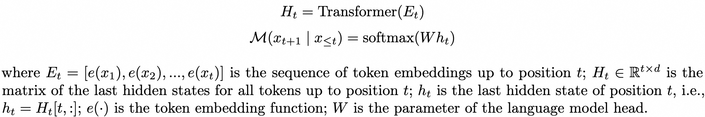
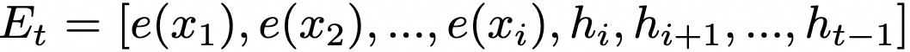
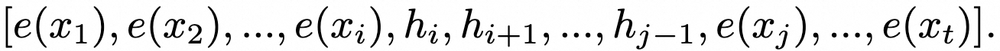
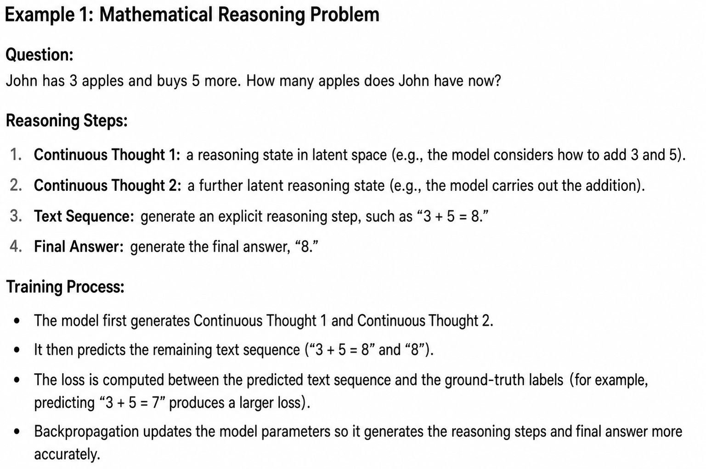
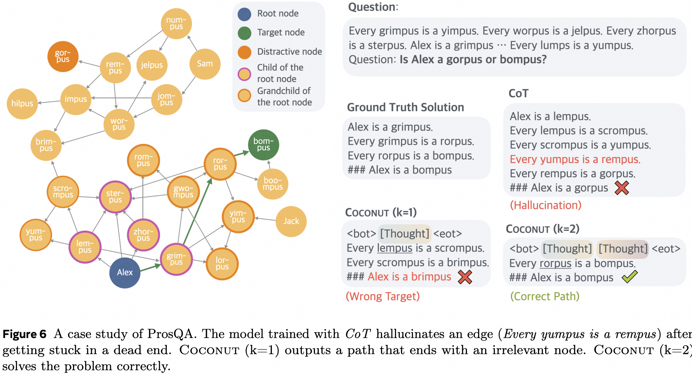
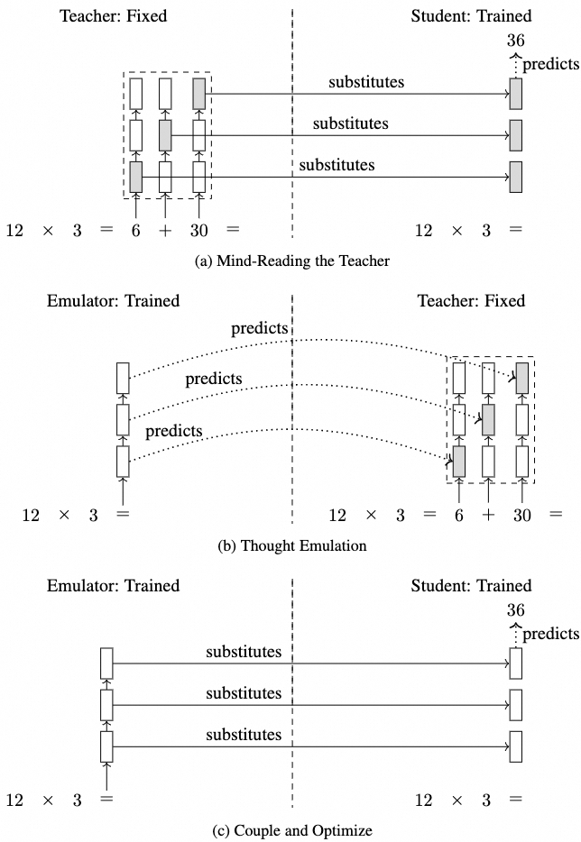

Paper Reading Notes
Training Large Language Models to Reason in a Continuous Latent Space
A guided reading of Coconut: how continuous thoughts replace discrete reasoning tokens, how the staged curriculum works, and why latent states may preserve multiple reasoning paths.
Primary paper: Hao et al., “Training Large Language Models to Reason in a Continuous Latent Space”.
Language is an interface for communication, but it may not be the most natural substrate for every step of reasoning. Coconut—short for Chain of Continuous Thought—tests what happens when a language model stops decoding every intermediate state into a word and instead feeds its hidden state directly back into the model.
TL;DR
- Many tokens in a textual chain of thought mainly maintain linguistic coherence, while a smaller number of decisions carry most of the planning burden.
- Coconut treats the final hidden state at a reasoning position as a continuous thought and reuses that vector as the next input embedding.
- The paper reports that a continuous thought can retain several plausible next steps at once. On search-heavy tasks, this produces behavior resembling breadth-first exploration rather than an immediate commitment to one textual path.
- A staged curriculum gradually replaces explicit language reasoning steps with continuous thoughts so that the model learns to operate in latent mode.
Motivation: reasoning does not have to be verbalized
Autoregressive language models normally reason in the same space in which they communicate: a sequence of discrete word tokens. Every intermediate step must pass through the language-model head, become a token, and then return through the embedding layer before the model can continue.
Coconut removes this round trip during selected reasoning steps. The model's last hidden state already summarizes the current computation. Instead of turning it into a token, Coconut uses the vector itself as the next input. The reasoning trace can therefore evolve in a continuous space without being forced through a fixed vocabulary at every step.

The important claim is not merely that latent vectors are compact. A single vector may encode support for several possible continuations at the same time. A decoded token must commit to one branch; a continuous state can, in principle, carry information about multiple branches into later computation.
Transformer and cross-entropy primer
Before looking at Coconut, it helps to separate three objects that are easy to conflate:
- Token embeddings are the vectors supplied to the Transformer as inputs.
- Hidden states are the contextual vectors produced by Transformer layers.
- Logits are obtained by projecting a hidden state into vocabulary space; softmax turns them into next-token probabilities.


During supervised language-model training, all target positions can be evaluated in one forward pass because a causal mask prevents each position from attending to future tokens. During generation, by contrast, the model emits one new token at a time and appends it to the context.



A small cross-entropy example
Suppose the vocabulary contains only three words: [cat, dog, fish]. Given the prefix I have a, the correct next word is cat. Assume the model produces the logits
[2.0, 1.0, -1.0]Softmax converts these scores into a probability distribution:
The resulting probabilities are approximately [0.70, 0.26, 0.04]. For the one-hot target [1, 0, 0], the cross-entropy is
For a batch with losses [0.36, 0.52, 0.10], the mean loss is
Backpropagation then adjusts the parameters to increase the probability of the correct target. Coconut retains this familiar token-level objective for the textual portion of the output; the difference is what happens before those supervised tokens.
From explicit to internalized reasoning
One route toward implicit reasoning is to begin with a fully explicit solution and gradually remove intermediate reasoning tokens during training. The model is forced to absorb more of the computation into its internal states as the visible scaffold disappears.

How Coconut works
For a token sequence \(x=(x_1,\ldots,x_T)\), let \(e(\cdot)\) be the embedding function and define
where \(W\) is the language-model head. A standard model uses \(Wh_t\) to choose a token and then obtains the next input through the embedding lookup. Coconut can still compute this distribution for analysis, but it does not need to sample a token while it is in latent mode.

Assume that latent reasoning starts after position \(i\). At a later latent step \(t\), the input sequence is
Each newly produced hidden state becomes the next input embedding. There is no discrete token between \(h_i\) and \(h_{i+1}\).

If latent mode ends before token \(x_j\), normal embeddings resume:

Special tokens mark the boundaries: <bot> begins latent reasoning and <eot> ends it. The paper discusses either predicting when to stop or using a fixed number of latent thoughts; its experiments generally use the fixed-length option for simplicity.
Staged training: replacing language steps with continuous thoughts
The central training problem is distribution shift. A pretrained model expects token embeddings, not its own final hidden states, as inputs. Coconut therefore uses a curriculum rather than replacing the full reasoning chain at once.

- Stage 0: train on the complete language chain of thought, with latent-mode boundary tokens inserted but no continuous thought yet.
- Stage 1: replace the first textual reasoning step with one or more continuous thoughts and compute loss on the remaining text.
- Later stages: continue replacing early language steps until only the answer remains after the latent segment.
If the current stage schedules \(n\) continuous thoughts, training requires \(n+1\) forward passes: one pass for each new latent state and a final pass that produces the supervised textual continuation. Because the hidden states are passed directly between differentiable computations, gradients can flow through the continuous reasoning segment.

Why continuous states can resemble latent tree search
A language chain must select a concrete next token. If that token commits the model to a poor branch, subsequent text may continue along the dead end or invent a connection. A continuous representation can postpone that commitment by preserving evidence for several possible next nodes.
The paper illustrates this behavior on ProsQA, a logical-reasoning task represented by a directed acyclic graph. In the example below, textual CoT follows a dead end and hallucinates an edge. One continuous thought still reaches the wrong target, while two continuous thoughts preserve enough search state to recover the correct path.

This is best read as an empirical interpretation, not as evidence that Coconut literally executes a symbolic BFS algorithm. The authors probe candidate probabilities after successive latent thoughts and observe a transition from broad support over several candidates toward a more concentrated choice. That pattern is analogous to breadth-first exploration followed by pruning.
Related method: implicit chain of thought through knowledge distillation
A related paper, “Implicit Chain of Thought Reasoning via Knowledge Distillation”, also moves reasoning away from explicit tokens, but its mechanism is different. Coconut recurrently feeds a model's own hidden state back as an input. The distillation approach transfers hidden reasoning states from an explicit-CoT teacher into a separate student/emulator system.

Mind-reading the teacher
First, a student is trained to predict the final answer while receiving hidden states from a fixed teacher. Those teacher states contain information about the explicit intermediate calculations. The student learns to use the states without generating the corresponding words.
Thought emulation
Next, an emulator learns to predict the teacher's hidden states directly from the input. The teacher reasons “horizontally” by generating intermediate tokens; the emulator tries to reproduce the relevant computation “vertically” across its layers.
Couple and optimize
Finally, the emulator replaces the fixed teacher. Its predicted states are inserted into the student, and the combined system is fine-tuned end to end. At this point, the internal trajectory no longer has to match the teacher exactly as long as it supports the correct output.
The multiple-path problem
Hidden-state regression becomes difficult when a problem admits several valid reasoning paths. Suppose two correct derivations produce teacher states \(z_l^{(1)}\) and \(z_l^{(2)}\). A simple mean-squared objective,
encourages the emulator to predict their conditional mean:
That average need not correspond to either valid reasoning trajectory. It is analogous to fitting a single Gaussian to data generated by several well-separated modes.
Using a mixture model
A mixture model preserves multiple modes explicitly:
Here, \(c_l\) indexes a possible reasoning component. Each component can predict a different hidden state, while \(p(c_l\mid h_l)\) provides its weight. With Gaussian components centered at \(f(h_l,c_l)\), training combines state reconstruction with supervision for the component identity:
The broader lesson is shared with Coconut: forcing a rich internal computation into a single discrete or averaged representation can discard alternatives too early. Continuous and multimodal states offer ways to delay that collapse.
Takeaways
- Coconut changes the recurrent interface: hidden states become inputs during latent mode instead of being decoded and re-embedded.
- The curriculum is essential: the model progressively adapts to its own hidden states as inputs.
- Latent reasoning can preserve alternatives: the paper's probes suggest parallel exploration before later concentration, especially on planning-heavy graph problems.
- Continuous reasoning is not automatically better: results depend on the task, the number of latent thoughts, and the training setup. On GSM8K, the paper reports an efficiency–accuracy trade-off rather than universal superiority over explicit CoT.
- Different latent-CoT methods should not be conflated: recurrent hidden-state feedback, stepwise internalization, and teacher-state distillation move computation into latent space through distinct mechanisms.
Sources and figure credits
- Shibo Hao et al. Training Large Language Models to Reason in a Continuous Latent Space.
- Yuntian Deng, Yejin Choi, and Stuart Shieber. From Explicit CoT to Implicit CoT: Learning to Internalize CoT Step by Step.
- Yuntian Deng et al. Implicit Chain of Thought Reasoning via Knowledge Distillation.
Figures were preserved from my original reading notes. Figures 1, 8–11, and 13 originate from or reproduce material in the Coconut paper; Figure 7 comes from the stepwise-internalization paper; Figure 14 comes from the implicit-CoT distillation paper. The Transformer walkthrough figures were retained as explanatory context. Chinese annotations in the original notes were translated into English for this post.